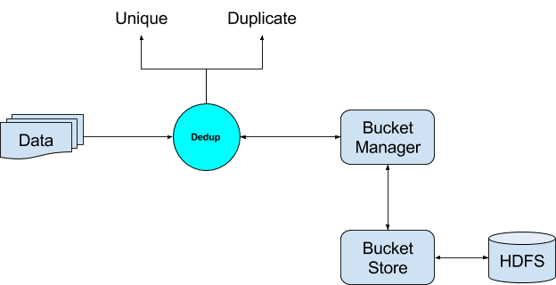
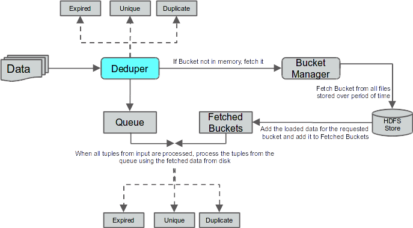
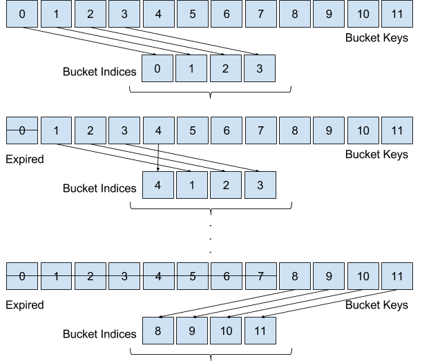
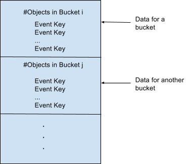

Dedup Operator
This document is intended as a guide for understanding and using the Dedup operator/module.
Dedup - “What” in a Nutshell
Dedup is actually a shortened form of Deduplication. Duplicates are omnipresent and can be found in almost any kind of data. Most of the times it is essential to discard, or at the very least separate out the data into unique and duplicate components. The entire purpose of this operator is to de-duplicate data. In other words, when data passes through this operator, it will be segregated into two different data sets, one containing all unique tuples, and the other containing duplicates.
Dedup - “How” in a Nutshell
In order to quickly decide whether an incoming tuple is duplicate or unique, it has to store each incoming tuple (or a signature, like key for example) to be used for comparison later. A plain storage for such a huge data is hardly scalable. Deduper employs a large scale distributed hashing mechanism (known as the Bucket Store) which allows it to identify if a particular tuple is duplicate or unique. Each time it identifies a tuple as a unique tuple, it also stores it into a persistent store called the Bucket Store for lookup in the future.

Following are the different components of the Deduper Operator
- Dedup Operator - This is responsible for the overall functionality of the operator. This in turn makes use of other components to establish the end goal of deciding whether a tuple is a duplicate of some earlier tuple, or is a unique tuple.
- Bucket Store - This is responsible for storing the unique tuples as supplied by the Deduper and storing them into Buckets in HDFS.
- Bucket Manager - Since, all of the data cannot be stored in memory, this component is responsible for loading and unloading of the buckets to and from the memory as requested by the Deduper.
This was a very small introduction to the functioning of the Deduper. Following sections will go into more detail on each of the components.
Use case - Basic Dedup
Dedup Key
A dedup key is a set of one or more fields in the data tuple which acts as the key for the tuples. This is used by the deduper to compare tuples to arrive at the conclusion on whether two tuples are duplicates.
Consider an example schema and two sample tuples
{Name, Phone, Email, Date, State, Zip, Country}
Tuple 1:
{
Austin U. Saunders,
+91-319-340-59385,
ausaunders@semperegestasurna.com,
2015-11-09 13:38:38,
Texas,
73301,
United States
}
Tuple 2:
{
Austin U. Saunders,
+91-319-340-59385,
austin@semperegestasurna.com,
2015-11-09 13:39:38,
Texas,
73301,
United States
}
Let us assume that the Dedup Key is
{Name, Phone}
In this case, the two tuples are duplicates because the key fields are same in both the tuples. However, if we plan to make the Dedup Key as
{Phone, Email}
then in this case, the two are unique tuples as the keys of both tuples do not match.
Use case Details
Consider the case of de-duplicating a master data set which is stored in a file. Further also consider the following schema for tuples in the data set.
{Name, Phone, Email, Date, City, Zip, Country}
Also consider that we need to identify unique customers from the master data set. So, ultimately the output needed for the use case is two data sets - Unique Records and Duplicate Records.
As part of configuring the operator for this use case, we need to set the following parameters:
Dedup Key - This can be set as the primary key which can be used to uniquely identify a Customer. For example, we can set it to
{Name,Email}
The above configuration is sufficient to resolve the use case.
Use case - Dedup with Expiry
Motivation
The Basic Dedup use case is the most straightforward and is usually applied when the amount of data to be processed is not huge. However, if the incoming data is huge, or even never-ending, it is usually not necessary to keep storing all the data. This is because in most real world use cases, the duplicates occur only a short distance apart. Hence, after a while, it is usually okay to forget the part of the history and consider only limited history for identifying duplicates, in the interest of efficiency. In other words, we expire some tuples which are (or were supposed to be) delivered long back. Doing so, reduces the load on the Bucket Store which effectively deletes part of the history, thus making the whole process more efficient. We call this use case, Dedup with expiry.
Expiry Key
The easiest way to understand this use case is to consider time as the criteria of expiring tuples. Time is a natural expiry key and is in line with the concept of expiry. Formally, an expiry field is a field in the input tuple which can be used to discard incoming tuples as expired. This expiry key usually works with another parameter called Expiry Period defined next.
Expiry Period
The expiry period is the value supplied by the user to define the extent of history which should be considered while expiring tuples.
Use case Details
Consider an incoming stream of system logs. The use case requires us to identify duplicate log messages and pass on only the unique ones. Another relaxation in the use case is that the log messages which are older than a day, may not be considered and must be filtered out as expired. The expiry must be measured with respect to the time stamp in the logs. For example, if the timestamp in the incoming message is “30-12-2014 00:00:00” and the latest message that the system has encountered had the time stamp “31-12-2014 00:00:00”, then the incoming message must be considered as expired. However, if the incoming message had any timestamp like “30-12-2014 00:11:00”, it must be accepted into the system and check for a possible duplicate.
The expiry facet in the use case above gives us an advantage in that we do not have to compare the incoming record with all the data to check if it is a duplicate. At the same time, all the data need not be stored. Just a day worth of data needs to be stored in order to address the above use case.
Configuring the below parameters will solve the problem for this use case:
- Dedup Key - This is the dedup key for the incoming tuples (similar to the Basic Dedup use case). This can be any key which can uniquely identify a record. For log messages this can be a serial number attached in the log.
- Expiry Key - This is the key which can help identify the expired records, as explained above. In this particular use case, it can be a timestamp field which indicates when the log message was generated.
- Expiry Period - This is the period of expiry as explained above. In our particular use case this will be 24 hours.
Configuration of these parameters would resolve this use case.
Use cases - Summary
- Basic Dedup - Deduplication of bounded datasets. Data is assumed to be bounded. This use case is not meant for never ending streams of data. For example: Deduplication of master data like customer records, product catalogs etc.
- Dedup with Expiry - Deduplication of unlimited streams of data. This use case handles unbounded streams of data and can run forever. An expiry key and criterion is expected as part of the input which helps avoid storing all the unique data. This helps speed up performance. Following expiry keys are supported:
- Time based - Timestamp fields, system date, creation date, load date etc. are examples of the fields that can be used as a time based expiry key. Additionally an option can be provided so as to maintain time with respect to System time, or Tuple time
- With respect to system time - Time progresses with system time. Any expiry criterions are executed with this notion of system time.
- With respect to tuple time - Time progresses based on the time in the incoming tuples. Expiry criterions are executed with the notion of time indicated by the incoming tuple.
- Any Ordered Key - Similar to time, any non-time field can also be used as an expiry key, provided the key is also ordered (analogous to the time field). Examples include Transaction ids, Sequence Ids etc. The expiry criterion must also be in the domain of the key.
- Categorical Key - Any categorical key can be used for expiry, provided that data is grouped by the key. Examples include City name, Circle Id etc. In case of City name, for example, the records tend to appear for City 1 first, followed by City 2, then City 3 and so on. Any out of order cities may be considered as expired based on the configuration of the expiry criterion.
Technical Architecture
Block Diagram

The deduper has a single input port and multiple output ports.
- input - This is the input port through which the tuples arrive at the Deduper.
- unique - This is the output port on which unique tuples are sent out by the Deduper.
- duplicate - This is the output port on which duplicate tuples are sent out by the Deduper.
- expired - This is the output port on which expired tuples are sent out by the Deduper.
- error - This is the output port on which the error tuples are sent out by the Deduper.
Concepts
Dedup Key
A dedup key is a set of one or more fields in the data tuple which acts as the key for the tuples. This is used by the deduper to compare tuples to arrive at the conclusion on whether two tuples are duplicates. If Dedup Key of two tuples match, then they are duplicates, else they are unique.
Expiry Key
A tuple may or may not have an Expiry Key. Dedup operator cannot keep storing all the data that is flowing into the operator. At some point it becomes essential to discard some of the historical tuples in interest of memory and efficiency.
At the same time, tuples are expected to arrive at the Dedup operator within some time after they are generated. After this time, the tuples may be considered as stale or obsolete.
In such cases, the Deduper chooses to consider these tuples expired and takes no action but to separate out these tuples on a different port in order to be processed by some other operator or offline analysis.
In order to create a criterion for discarding such tuples, we introduce an Expiry Key. Looking at the value of the Expiry Key in each tuple, we can decide whether or not to discard this tuple as expired.
The easiest way to understand this use case is to consider time as the criteria of expiring tuples. Time is a very good and general example of an expiry key and is in line with the concept of expiry. Formally, an expiry field is a field in the input tuple which can be used to discard incoming tuples as expired. There are some criteria for a field to be considered an Expiry Field. At-least one of the following must hold for an Expiry Key.
- The domain of the key must be ordered. Example - Timestamp field
- The domain of the key must be categorical and sorted. Example - City names grouped together
This expiry key usually works with another parameter called Expiry Period defined next.
Expiry Period
The Expiry Period is the value supplied by the user which decides when a particular tuple expires.
Time Points
For every dataset that the deduper processes, it maintains a set of time points:
- Latest Point - This is the maximum time point observed in all the processed tuples.
- Expiry Point - This is given by: Expiry Point = Latest Point - Expiry Period
These points help the deduper to make decisions related to expiry of a tuple.
Example - Expiry
Tuple Id |
Expiry Key (Expiry Period = 10) |
Latest Point |
Expiry Point |
Decision for Tuple |
1 |
10 |
10 |
1 |
Not Expired |
2 |
20 |
20 |
11 |
Not Expired |
3 |
25 |
25 |
16 |
Not Expired |
4 |
40 |
40 |
31 |
Not Expired |
5 |
21 |
40 |
31 |
Expired |
6 |
35 |
40 |
31 |
Not Expired |
7 |
45 |
45 |
36 |
Not Expired |
8 |
57 |
57 |
48 |
Not Expired |
Buckets
One of the requirements of the Deduper is to store all the unique tuples (actually, just the dedup keys of tuples). Keeping an ever growing cache in memory is not scalable. So what we need was a limited cache backed by a persistent store. Now to reduce cache misses, we load a chunk of data (called Buckets), together into memory. Buckets help narrow down the search of duplicates for incoming tuples. A Bucket is an abstraction for a collection of tuples all of which share a common hash value based on some hash function. A bucket is identified using a Bucket Key, defined below. A Bucket has a span called Bucket Span.
Bucket Span
Bucket span is simply the range of the domain that is covered by the Bucket. This span is specified in the domain of the Expiry key. If the Expiry Key is time, then the Bucket span will be specified in seconds. It is only defined in case tuples have an Expiry Key.
Bucket Key
Bucket Key acts as the identifier for a Bucket. It is derived using the Dedup Key or Expiry Key of the tuple along with the Bucket Span.
We define Bucket Key differently in case of Basic Dedup and Dedup with Expiry.
In case of Basic Dedup:
Bucket Key = Hash(Dedup Key) % Number of Buckets
In case of Dedup with Expiry:
Bucket Key = Expiry Key / Bucket Span
Number of Buckets
The number of buckets can be given by
Num Buckets = Expiry Period / Bucket Span.
This is because at any point of time, we need only store Expiry Period worth of data. As soon as we get a new tuple, we can forget about the least recent tuple in our store, since this tuple will be expired due to the most recent tuple.
Bucket Index
A Bucket Index iterates over number of buckets. In contrast to Bucket Key, which continuously keeps on increasing, Bucket Index will loop around to 0, once it has reached value (Number of Buckets - 1).
Example - Buckets

Assumptions
Assumption 1
This assumption is only applicable in case of Dedup with Expiry.
For any two tuples, t1 and t2 having dedup keys d1 and d2, and expiry
keys e1 and e2, respectively, the following holds:
If d1 = d2, then e1 = e2
In other words, there may never be two tuples t1 and t2 such that
Tuple 1: d1, e1
Tuple 2: d2, e2
d1 = d2 and e1 != e2
This assumption was made with respect to certain use cases. These use cases follow this assumption in that the records which are duplicates are exactly identical. An example use case is when log messages are replayed erroneously, and we want to identify the duplicate log messages. In such cases, we need not worry about two different log messages having the same identifier but different timestamps. Since its a replay of the same data, the duplicate records are assumed to be exactly identical.
The reason for making this assumption was to simplify and architect the operator to suit only such use cases. The backend architecture for use cases where this assumption does not hold, is very different from the one where this assumption holds. Hence handling the generic case could have been much more complicated and inefficient.
Flow of a Tuple through Dedup Operator
Tuples flow through the Dedup operator one by one. Deduper may choose to process a tuple immediately, or store it in some data structure for later processing. We break down the processing of the Deduper by various stages as follows.
Deduper View
A tuple always arrives at the input port of the Dedup operator. Once arrived, the Deduper does the following tasks.
Identify Bucket Key
Identify the Bucket Key of the tuple. Bucket key identifies the Bucket to which this tuple belongs. In case of the basic dedup use case, the Bucket Key will be calculated as follows:
Bucket Key = Hash(Dedup Key) % Number of Buckets
In case of Dedup with expiry, we calculate the Bucket key as
Bucket Key = Expiry Key / Bucket Span
Check if tuple is Expired
This is only applicable in case of Dedup with expiry. The following condition can be used to check if the tuple is expired.
if ( Latest Point - Expiry Key < Expiry Point ) then Expired
If the tuple is expired, then put it out to the expired port.
Check if tuple is a Duplicate or Unique
Once a tuple passes the check of expiry, we proceed to check if the tuple already has a duplicate tuple which is not expired. Note that if the tuple in question is not expired, the duplicate will also not have expired due to the assumption listed here.
Duplicates of the tuple being processed, if any, will be available only in the bucket identified by the Bucket Key identified in the first step. The amount of physical memory available with the Dedup operator may not be sufficient to hold all the buckets in memory. Hence at any given point in time, only a configured maximum number of buckets can be kept in memory. The Deduper follows different paths depending on the availability of the required bucket in memory.
Case I - Bucket available in memory
In case the bucket with key Bucket Key is available in memory, the Deduper simply checks if there is a tuple in the bucket with the same Dedup Key as the one currently being processed. If, so, then the tuple being processed is deemed to be a duplicate and put out on the Duplicate port. If not, then the tuple being processed is deemed to be unique and put out on the Unique port. If the tuple is unique, additionally it is also added to the bucket for future references.
Case II - Bucket not in memory
In case the bucket with key Bucket Key is not available in memory, the Deduper requests the Bucket Manager to load the bucket with key Bucket Key from the Bucket Store. This request is processed by the Bucket Manager in a separate asynchronous thread as detailed here. Additionally the Deduper also inserts the tuple being processed into a waiting events queue for later processing. After this, the Deduper cannot proceed until the bucket is loaded by the Bucket Manager and hence proceeds to process another tuple. Next section details the process after the bucket is loaded by the Bucket Manager.
Handling tuples after Buckets are loaded
The Bucket Manager would load all the buckets requested by the Deduper and add them to a fetched buckets queue. During the span of one application window of the Deduper, it will process all the tuples on its input port. Processing here could mean one of the below:
- The bucket for a tuple was already available in memory and hence the deduper could conclude whether a tuple is a duplicate or unique.
- The bucket for a tuple was not available in memory and a request was made to the Bucket Manager for asynchronously loading that particular bucket in memory.
After processing all the tuples as above, the Deduper starts processing the tuples in the waiting events queue as mentioned in section Case II - Bucket not in memory. For each of these waiting tuples, a corresponding bucket is loaded by the Bucket Manager in the fetched buckets queue. Using these fetched buckets, the Deduper can resolve the pending tuples as duplicate or unique. This is done in the same way as for Buckets available in memory.
Bucket Manager
Bucket manager is responsible for loading and unloading of buckets to and from memory. Bucket manager maintains a requested buckets queue which holds the requests (in form of bucket keys) from the Deduper, indicating which buckets need to be loaded from the Bucket Store. The requests are processed by the Bucket Manager one by one. The first step is to identify the Bucket Index for bucket key.
Identify Bucket Index
Bucket index is discussed here. Bucket index can be calculated as follows:
Bucket Index = Requested Bucket Key % Number of Buckets,
where Number of Buckets is as defined here.
Request Bucket Load from Store
Once we have the Bucket Index, the Bucket Store is requested to fetch the corresponding bucket and load it into memory. This is a blocking call and the Bucket Manager waits while the Bucket Store fetches the data from the store. Once the data is available, the Bucket Manager bundles the data into a bucket and adds it to the fetched buckets queue mentioned here. We detail the process of fetching the bucket data from the store in this section.
Bucket Eviction
It may not be efficient or even possible in some cases to keep all the buckets into memory. This is the reason the buckets are persisted to the HDFS store every window. This makes it essential to off load some of the buckets from memory so that new buckets can be loaded. The policy followed by the Bucket Manager is the least recently used policy. Whenever the Bucket Manager needs to load a particular bucket into memory, it identifies a bucket in memory which has been accessed least recently and unloads it from memory. No other processing has to be done in this case. Upon unloading, it informs the listeners (the Deduper thread) that the particular bucket has been off loaded from memory and is no longer available.
Bucket Store
The Bucket Store is responsible for fetching and storing the data from a persistent store. In this case, HDFS is used as the persistent store and HDFSBucketStore is responsible for interacting with the store.
Data Format
Bucket store persists the buckets onto the HDFS. This is typically done every window, although this can be configured to be done every checkpoint window. This data is stored as files on HDFS. Every write i.e. new unique records generated per window (or per checkpoint window) is written into a new file on HDFS. The format of the file is given below.

All the unique records (actually, just keys, since dedup requires just storage of keys) that are received in a window, are collected in a set of buckets and written one after the other serially in a file on HDFS. This data is indexed in case it needs to be read back. Index structures are described in the Data Structures section.
Data Structures
HDFS Bucket Store keeps the information about the buckets and their locations in various data structures.
- Bucket Positions - This data structure stores for each bucket index, the files and the offset within those files where the data for the bucket is stored. Since the data for a single bucket may be spread across multiple files, the number of files and their offsets may be multiple.
- Window To Buckets - This data structure keeps track of what buckets were modified in which window. This is essentially a multi map of window id to the set of bucket indexes that were written in that window.
- Window to Timestamp - This data structure keeps track of the maximum timestamp within a particular window file. This gives an indication as to how old is the data in the window file and helps in identifying window files that can be deleted entirely.
Bucket Fetch
For fetching a particular bucket, a bucket index is passed to the HDFS bucket store. Using the bucket index, a list of window files is identified which contains the data for this index. The bucket positions data structure is used for this purpose. For each such window file, the Bucket Store forks off a thread to fetch that particular window file from HDFS. Effectively all the window files which contain data for a particular bucket index, are fetched in parallel from the HDFS. Once fetched, the data is bundled together and returned to the calling function i.e. the Bucket Manager.